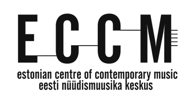

Logo, serveeritud ja ümber joonistatud
eccm.ee serves one picture of its mark, a 381 by 199 JPEG exported from Photoshop in February 2023, and no vector anywhere on the site. Until ECCM sends the original, the mark on these pages is an SVG redrawn from that picture, measured row by row rather than traced, so it lies over the JPEG to the pixel.
Kõrvuti

Üksteise peal
The redraw in orange over the served picture. Where the two agree, orange sits on black. Orange on white is ink the redraw has and the JPEG lacks. Black with no orange on it is ink the JPEG has and the redraw lacks.
Kaks korda suurem
Lehel näidatud suurustes
Alakirja kiri
The tagline's typeface is not known: a condensed grotesque with a double-storey a, an angled terminal on the t and a straight-tailed y, at an x-height of 14 px in a picture with JPEG ringing round every stroke. Each row below sets the two lines in a face this machine has and squeezes them to the widths the picture measures, 311 and 221 px, so every row is the right size and none is the right letters. The redraw uses the row that needs the least squeeze, and the figure under each row is measured on this machine. Pick by eye, or wait for the name.
Mis on mõõdetud, mis mitte
- The capitals
- 93 px tall from y 29, stroke 14, the E's bars 38 and 31 wide, 13 tall and the bottom one 14, the M's arms 10 wide meeting on the baseline
- The C
- a stadium 44 wide and 97 tall, open on the right from y 60 to y 88, and the second C is the first moved 81 px right
- The stave
- five hairlines 1.5 px tall on a 7.375 px pitch, 12 px past the M, and three joins between the letters, each running flush along an edge of the letter it meets, which is where the picture has them
- The tagline
- x-height 14, baselines at 153 and 174, lines 311 and 221 px wide, centred under the mark
- Not known
- the tagline's face, the designer, whether the letters were drawn or typed, and whether the mark may be redrawn at all
- Next
- one email to ECCM asking for the vector, the face and the designer's name. It has not gone.